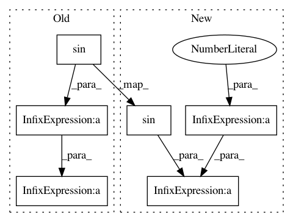

3c082fc0821ff9f9b1284a486a5cf60f9aec238e,geomstats/special_orthogonal_group.py,SpecialOrthogonalGroup,rotation_vector_from_quaternion,#SpecialOrthogonalGroup#Any#,673
Before Change
mask_0 = gs.isclose(half_angle, 0.)
mask_0 = gs.squeeze(mask_0, axis=1)
mask_not_0 = ~mask_0
rotation_axis = (quaternion[mask_not_0, 1:]
/ gs.sin(half_angle[mask_not_0]))
rot_vec[mask_not_0] = (2 * half_angle[mask_not_0]
* rotation_axis)
rot_vec = self.regularize(rot_vec, point_type="vector")
return rot_vec
After Change
mask_not_0 = ~mask_0
rotation_axis = gs.divide(quaternion[:, 1:],
gs.sin(half_angle) *
gs.cast(mask_0, gs.float32) +
gs.cast(mask_not_0, gs.float32))
rot_vec = gs.array(2 * half_angle *
rotation_axis *
gs.cast(mask_not_0, gs.float32))
rot_vec = self.regularize(rot_vec, point_type="vector")
return rot_vec
In pattern: SUPERPATTERN
Frequency: 3
Non-data size: 6
Instances
Project Name: geomstats/geomstats
Commit Name: 3c082fc0821ff9f9b1284a486a5cf60f9aec238e
Time: 2018-11-07
Author: null
File Name: geomstats/special_orthogonal_group.py
Class Name: SpecialOrthogonalGroup
Method Name: rotation_vector_from_quaternion
Project Name: LCAV/pyroomacoustics
Commit Name: c128615c048f69e532714201e1e5b4e1c1663d14
Time: 2018-04-27
Author: fakufaku@gmail.com
File Name: examples/doa_algorithms.py
Class Name:
Method Name:
Project Name: scikit-optimize/scikit-optimize
Commit Name: 41468089224d32151505ac5d8052e9db3c6205bc
Time: 2020-02-10
Author: holgernahrstaedt@gmx.de
File Name: examples/optimizer-with-different-base-estimator.py
Class Name:
Method Name: objective